if (!require("pacman")) install.packages("pacman")
pacman::p_load(readr, tidyverse, class, caret, bench, DataExplorer, randomForest, pROC)Final Project
0. Setup Chunk
Text
1. Data Exploration
Text
# import dataset
data = read_csv("data/BreastCancer.csv", show_col_types = FALSE)# first overview
head(data)# A tibble: 6 × 33
id diagnosis radius_mean texture_mean perimeter_mean area_mean
<dbl> <chr> <dbl> <dbl> <dbl> <dbl>
1 842302 M 18.0 10.4 123. 1001
2 842517 M 20.6 17.8 133. 1326
3 84300903 M 19.7 21.2 130 1203
4 84348301 M 11.4 20.4 77.6 386.
5 84358402 M 20.3 14.3 135. 1297
6 843786 M 12.4 15.7 82.6 477.
# ℹ 27 more variables: smoothness_mean <dbl>, compactness_mean <dbl>,
# concavity_mean <dbl>, `concave points_mean` <dbl>, symmetry_mean <dbl>,
# fractal_dimension_mean <dbl>, radius_se <dbl>, texture_se <dbl>,
# perimeter_se <dbl>, area_se <dbl>, smoothness_se <dbl>,
# compactness_se <dbl>, concavity_se <dbl>, `concave points_se` <dbl>,
# symmetry_se <dbl>, fractal_dimension_se <dbl>, radius_worst <dbl>,
# texture_worst <dbl>, perimeter_worst <dbl>, area_worst <dbl>, …# explore features and labels
str(data)spc_tbl_ [568 × 33] (S3: spec_tbl_df/tbl_df/tbl/data.frame)
$ id : num [1:568] 842302 842517 84300903 84348301 84358402 ...
$ diagnosis : chr [1:568] "M" "M" "M" "M" ...
$ radius_mean : num [1:568] 18 20.6 19.7 11.4 20.3 ...
$ texture_mean : num [1:568] 10.4 17.8 21.2 20.4 14.3 ...
$ perimeter_mean : num [1:568] 122.8 132.9 130 77.6 135.1 ...
$ area_mean : num [1:568] 1001 1326 1203 386 1297 ...
$ smoothness_mean : num [1:568] 0.1184 0.0847 0.1096 0.1425 0.1003 ...
$ compactness_mean : num [1:568] 0.2776 0.0786 0.1599 0.2839 0.1328 ...
$ concavity_mean : num [1:568] 0.3001 0.0869 0.1974 0.2414 0.198 ...
$ concave points_mean : num [1:568] 0.1471 0.0702 0.1279 0.1052 0.1043 ...
$ symmetry_mean : num [1:568] 0.242 0.181 0.207 0.26 0.181 ...
$ fractal_dimension_mean : num [1:568] 0.0787 0.0567 0.06 0.0974 0.0588 ...
$ radius_se : num [1:568] 1.095 0.543 0.746 0.496 0.757 ...
$ texture_se : num [1:568] 0.905 0.734 0.787 1.156 0.781 ...
$ perimeter_se : num [1:568] 8.59 3.4 4.58 3.44 5.44 ...
$ area_se : num [1:568] 153.4 74.1 94 27.2 94.4 ...
$ smoothness_se : num [1:568] 0.0064 0.00522 0.00615 0.00911 0.01149 ...
$ compactness_se : num [1:568] 0.049 0.0131 0.0401 0.0746 0.0246 ...
$ concavity_se : num [1:568] 0.0537 0.0186 0.0383 0.0566 0.0569 ...
$ concave points_se : num [1:568] 0.0159 0.0134 0.0206 0.0187 0.0188 ...
$ symmetry_se : num [1:568] 0.03 0.0139 0.0225 0.0596 0.0176 ...
$ fractal_dimension_se : num [1:568] 0.00619 0.00353 0.00457 0.00921 0.00511 ...
$ radius_worst : num [1:568] 25.4 25 23.6 14.9 22.5 ...
$ texture_worst : num [1:568] 17.3 23.4 25.5 26.5 16.7 ...
$ perimeter_worst : num [1:568] 184.6 158.8 152.5 98.9 152.2 ...
$ area_worst : num [1:568] 2019 1956 1709 568 1575 ...
$ smoothness_worst : num [1:568] 0.162 0.124 0.144 0.21 0.137 ...
$ compactness_worst : num [1:568] 0.666 0.187 0.424 0.866 0.205 ...
$ concavity_worst : num [1:568] 0.712 0.242 0.45 0.687 0.4 ...
$ concave points_worst : num [1:568] 0.265 0.186 0.243 0.258 0.163 ...
$ symmetry_worst : num [1:568] 0.46 0.275 0.361 0.664 0.236 ...
$ fractal_dimension_worst: num [1:568] 0.1189 0.089 0.0876 0.173 0.0768 ...
$ ...33 : logi [1:568] NA NA NA NA NA NA ...
- attr(*, "spec")=
.. cols(
.. id = col_double(),
.. diagnosis = col_character(),
.. radius_mean = col_double(),
.. texture_mean = col_double(),
.. perimeter_mean = col_double(),
.. area_mean = col_double(),
.. smoothness_mean = col_double(),
.. compactness_mean = col_double(),
.. concavity_mean = col_double(),
.. `concave points_mean` = col_double(),
.. symmetry_mean = col_double(),
.. fractal_dimension_mean = col_double(),
.. radius_se = col_double(),
.. texture_se = col_double(),
.. perimeter_se = col_double(),
.. area_se = col_double(),
.. smoothness_se = col_double(),
.. compactness_se = col_double(),
.. concavity_se = col_double(),
.. `concave points_se` = col_double(),
.. symmetry_se = col_double(),
.. fractal_dimension_se = col_double(),
.. radius_worst = col_double(),
.. texture_worst = col_double(),
.. perimeter_worst = col_double(),
.. area_worst = col_double(),
.. smoothness_worst = col_double(),
.. compactness_worst = col_double(),
.. concavity_worst = col_double(),
.. `concave points_worst` = col_double(),
.. symmetry_worst = col_double(),
.. fractal_dimension_worst = col_double(),
.. ...33 = col_logical()
.. )
- attr(*, "problems")=<externalptr> # continue exploration
dim(data)[1] 568 33# count missing values per column
missing_count_per_column <- colSums(is.na(data))
missing_count_per_column id diagnosis radius_mean
0 0 0
texture_mean perimeter_mean area_mean
0 0 0
smoothness_mean compactness_mean concavity_mean
0 0 0
concave points_mean symmetry_mean fractal_dimension_mean
0 0 0
radius_se texture_se perimeter_se
0 0 0
area_se smoothness_se compactness_se
0 0 0
concavity_se concave points_se symmetry_se
0 0 0
fractal_dimension_se radius_worst texture_worst
0 0 0
perimeter_worst area_worst smoothness_worst
0 0 0
compactness_worst concavity_worst concave points_worst
0 0 0
symmetry_worst fractal_dimension_worst ...33
0 0 568 # INTERPRETATION: There are only missing values for variable
# data$...33 -> caused by trailing comma in csv
data <- subset(data, select = -c(...33))# visualize distribution of classes
# visualize means
data_means = pivot_longer(data %>% select(3:12),
everything(),
names_to = "Variable",
values_to = "Value")
ggplot(data_means, aes(x = Value)) +
geom_density(fill = "skyblue", color = "black", alpha = 0.5) +
facet_wrap(~Variable, scales = "free") +
labs(title = "Density Plots of the variable means")
Most means seem to be right-skewed. Thus, they will likely require some form of correction. Taking the logarithm is infeasible because of 0 values. Thus, square roots are shown below:
ggplot(data_means, aes(x = sqrt(Value))) +
geom_density(fill = "red", color = "black", alpha = 0.5) +
facet_wrap(~Variable, scales = "free") +
labs(title = "Density Plots of the square root transformation of the variable means")
# visualize standard errors
data_variances = pivot_longer(data %>% select(13:22),
everything(),
names_to = "Variable",
values_to = "Value")
ggplot(data_variances, aes(x = Value)) +
geom_density(fill = "skyblue", color = "black") +
facet_wrap(~Variable, scales = "free") +
labs(title = "Density Plots of the variable variances")
Similarly, the standard errors are also right-skewed. They could be fixed with a log-transformation, as standard errors are by definition > 0 (assuming there is variation).
ggplot(data_variances, aes(x = log(Value))) +
geom_density(fill = "red", color = "black", alpha = 0.5) +
facet_wrap(~Variable, scales = "free") +
labs(title = "Density Plots of the log transformations of the variable variances")Warning: Removed 24 rows containing non-finite values (`stat_density()`).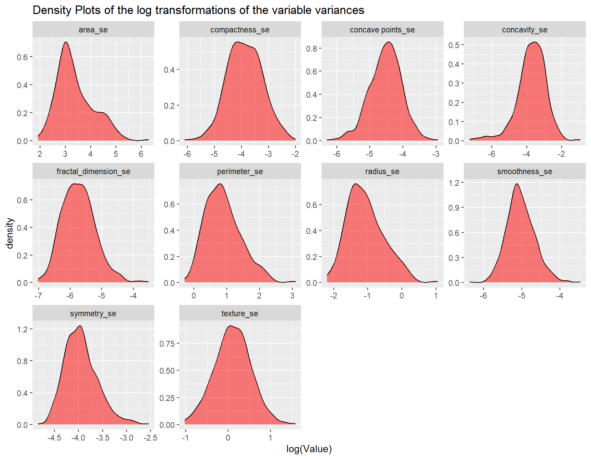
# visualize highest values
data_worst = pivot_longer(data %>% select(23:32),
everything(),
names_to = "Variable",
values_to = "Value")
ggplot(data_worst, aes(x = Value)) +
geom_density(fill = "skyblue", color = "black") +
facet_wrap(~Variable, scales = "free") +
labs(title = "Density Plots of the highest values of the variables")
ggplot(data_worst, aes(x = sqrt(Value))) +
geom_density(fill = "red", color = "black", alpha = 0.5) +
facet_wrap(~Variable, scales = "free") +
labs(title = "Density Plots of the square root transformation of the highest values of the variables")
plot_intro(data)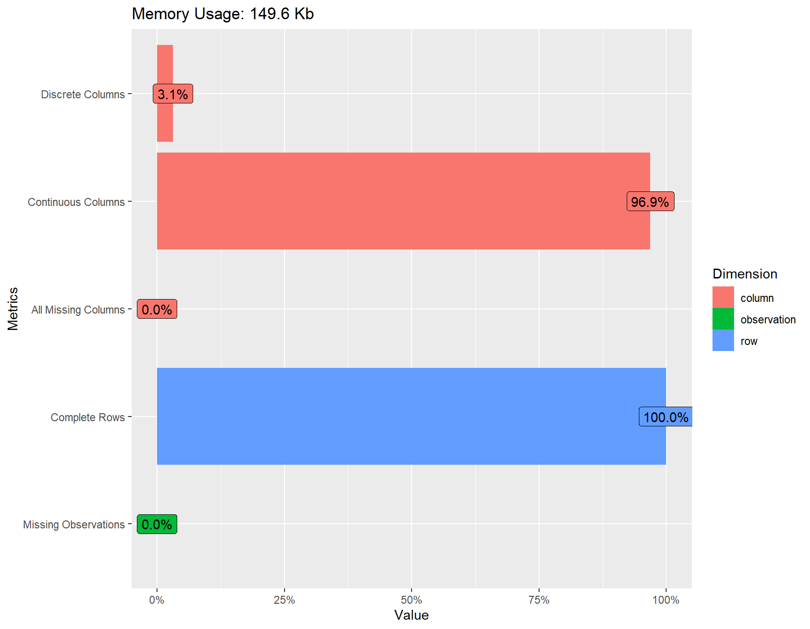
plot_correlation(data)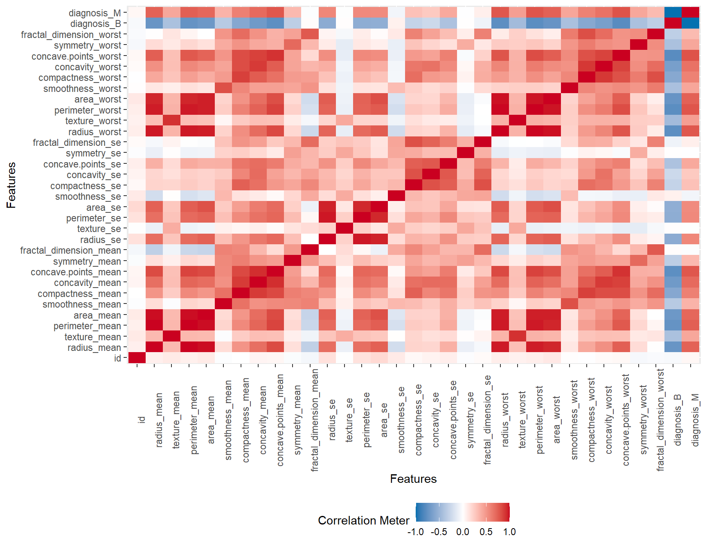
# compute descriptive statistics
summary(data) id diagnosis radius_mean texture_mean
Min. : 8670 Length:568 Min. : 6.981 Min. : 9.71
1st Qu.: 869222 Class :character 1st Qu.:11.707 1st Qu.:16.17
Median : 906157 Mode :character Median :13.375 Median :18.84
Mean : 30425140 Mean :14.139 Mean :19.28
3rd Qu.: 8825022 3rd Qu.:15.797 3rd Qu.:21.79
Max. :911320502 Max. :28.110 Max. :39.28
perimeter_mean area_mean smoothness_mean compactness_mean
Min. : 43.79 Min. : 143.5 Min. :0.06251 Min. :0.01938
1st Qu.: 75.20 1st Qu.: 420.3 1st Qu.:0.08640 1st Qu.:0.06517
Median : 86.29 Median : 551.4 Median :0.09589 Median :0.09312
Mean : 92.05 Mean : 655.7 Mean :0.09644 Mean :0.10445
3rd Qu.:104.15 3rd Qu.: 784.1 3rd Qu.:0.10533 3rd Qu.:0.13043
Max. :188.50 Max. :2501.0 Max. :0.16340 Max. :0.34540
concavity_mean concave points_mean symmetry_mean fractal_dimension_mean
Min. :0.00000 Min. :0.00000 Min. :0.1060 Min. :0.04996
1st Qu.:0.02958 1st Qu.:0.02035 1st Qu.:0.1620 1st Qu.:0.05770
Median :0.06155 Median :0.03360 Median :0.1792 Median :0.06155
Mean :0.08896 Mean :0.04901 Mean :0.1812 Mean :0.06280
3rd Qu.:0.13100 3rd Qu.:0.07401 3rd Qu.:0.1957 3rd Qu.:0.06613
Max. :0.42680 Max. :0.20120 Max. :0.3040 Max. :0.09744
radius_se texture_se perimeter_se area_se
Min. :0.1115 Min. :0.3602 Min. : 0.757 Min. : 6.802
1st Qu.:0.2324 1st Qu.:0.8331 1st Qu.: 1.605 1st Qu.: 17.850
Median :0.3240 Median :1.1080 Median : 2.285 Median : 24.565
Mean :0.4052 Mean :1.2165 Mean : 2.867 Mean : 40.374
3rd Qu.:0.4798 3rd Qu.:1.4743 3rd Qu.: 3.360 3rd Qu.: 45.237
Max. :2.8730 Max. :4.8850 Max. :21.980 Max. :542.200
smoothness_se compactness_se concavity_se concave points_se
Min. :0.001713 Min. :0.002252 Min. :0.00000 Min. :0.000000
1st Qu.:0.005166 1st Qu.:0.013133 1st Qu.:0.01510 1st Qu.:0.007663
Median :0.006374 Median :0.020460 Median :0.02592 Median :0.010950
Mean :0.007041 Mean :0.025515 Mean :0.03195 Mean :0.011817
3rd Qu.:0.008151 3rd Qu.:0.032455 3rd Qu.:0.04212 3rd Qu.:0.014730
Max. :0.031130 Max. :0.135400 Max. :0.39600 Max. :0.052790
symmetry_se fractal_dimension_se radius_worst texture_worst
Min. :0.007882 Min. :0.0008948 Min. : 7.93 Min. :12.02
1st Qu.:0.015128 1st Qu.:0.0022445 1st Qu.:13.03 1st Qu.:21.07
Median :0.018725 Median :0.0031955 Median :14.97 Median :25.41
Mean :0.020531 Mean :0.0037967 Mean :16.28 Mean :25.67
3rd Qu.:0.023398 3rd Qu.:0.0045585 3rd Qu.:18.80 3rd Qu.:29.68
Max. :0.078950 Max. :0.0298400 Max. :36.04 Max. :49.54
perimeter_worst area_worst smoothness_worst compactness_worst
Min. : 50.41 Min. : 185.2 Min. :0.07117 Min. :0.02729
1st Qu.: 84.15 1st Qu.: 515.7 1st Qu.:0.11660 1st Qu.:0.14758
Median : 97.67 Median : 686.5 Median :0.13135 Median :0.21300
Mean :107.35 Mean : 881.7 Mean :0.13244 Mean :0.25460
3rd Qu.:125.53 3rd Qu.:1085.0 3rd Qu.:0.14602 3rd Qu.:0.33930
Max. :251.20 Max. :4254.0 Max. :0.22260 Max. :1.05800
concavity_worst concave points_worst symmetry_worst fractal_dimension_worst
Min. :0.0000 Min. :0.00000 Min. :0.1565 Min. :0.05504
1st Qu.:0.1159 1st Qu.:0.06497 1st Qu.:0.2504 1st Qu.:0.07147
Median :0.2275 Median :0.10002 Median :0.2821 Median :0.08005
Mean :0.2727 Mean :0.11481 Mean :0.2901 Mean :0.08397
3rd Qu.:0.3835 3rd Qu.:0.16168 3rd Qu.:0.3180 3rd Qu.:0.09208
Max. :1.2520 Max. :0.29100 Max. :0.6638 Max. :0.20750 # compute share of malignant cancers
malignant_share = sum(data$diagnosis == "M") / nrow(data)
print(paste("The share of malignant cancers in the dataset is ", round(malignant_share, 3), ".", sep = ""))[1] "The share of malignant cancers in the dataset is 0.373."2. Data Preprocessing
Text
# handle categorical variables appropriately, if present
# change diagnosis to binary variable for easier interpretation
data = data %>%
mutate(malignant = as.factor(if_else(diagnosis == "M", TRUE, FALSE))) %>%
select(-diagnosis) %>%
relocate(malignant, .before = 2)# perform variable selection, if required
# remove id column
data = data %>% select(-id)
# rename variables with whitespaces
colnames(data) = sub(" ", "_", colnames(data))
data = as.data.frame(data, names = TRUE)# correlation analysis
# calculate correlation matrix
# correlation_matrix <- cor(data[,2:31])
# correlation_matrix
# find attributes that are highly corrected (ideally >0.75)
# highly_correlated <- findCorrelation(correlation_matrix, cutoff=0.5)
# highly_correlatedAs seen above in step 1.4) we should most likely reduce the number of variables used for our classifier. This fits the results presented by the heat map of all variabels
# prepare training scheme
control <- trainControl(method="repeatedcv", number=10, repeats=3)
# train the model
model <- train(malignant~., data=data, method="lvq", preProcess="scale",
trControl=control)
# estimate variable importance
importance <- varImp(model, scale=FALSE)
# summarize importance
importanceROC curve variable importance
only 20 most important variables shown (out of 30)
Importance
perimeter_worst 0.9754
radius_worst 0.9704
area_worst 0.9697
concave_points_worst 0.9666
concave_points_mean 0.9643
perimeter_mean 0.9467
area_mean 0.9381
concavity_mean 0.9377
radius_mean 0.9373
area_se 0.9263
concavity_worst 0.9211
perimeter_se 0.8767
radius_se 0.8686
compactness_mean 0.8634
compactness_worst 0.8619
concave_points_se 0.7912
texture_worst 0.7856
concavity_se 0.7802
texture_mean 0.7775
smoothness_worst 0.7534# plot importance
plot(importance)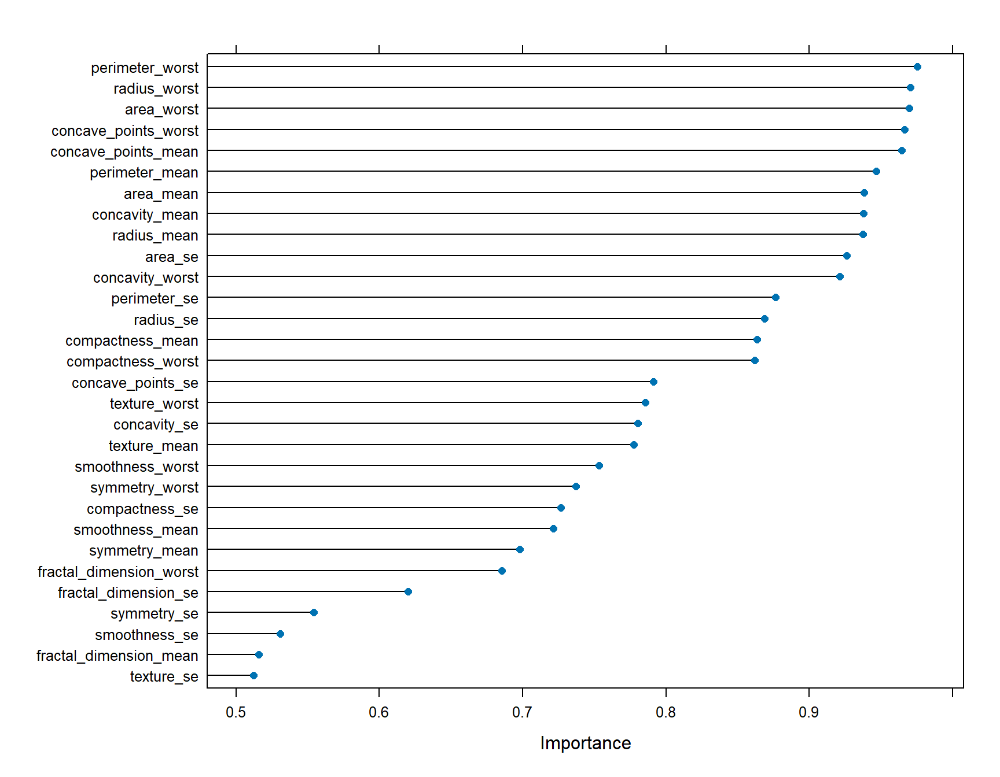
# standardize features
data = data %>%
mutate_at(vars(-malignant), ~ scale(.))# create training and testing sets
set.seed(-12)
train_size = floor(nrow(data) * 0.8)
train_index = sample(1:nrow(data), train_size, replace = FALSE)
test_index = setdiff(1:nrow(data), train_index)
# prepare as dataframes
train_data = data[train_index, ]
test_data = data[test_index, ]
# prepare matrixes and vectors
train_data_x = train_data %>% select(-malignant) %>% as.matrix()
train_data_y = train_data %>% mutate(malignant = as.logical(malignant)) %>% pull(malignant)
test_data_x = test_data %>% select(-malignant) %>% as.matrix()
test_data_y = test_data %>% mutate(malignant = as.logical(malignant)) %>% pull(malignant)
print(paste("The training set contains", nrow(train_data), "entries."))[1] "The training set contains 454 entries."print(paste("The testing set contains", nrow(test_data), "entries."))[1] "The testing set contains 114 entries."3. Model Selection & Model Evaluation
3.1 K-Nearest Neighbors
Text
define evaluation method for KNN for given dataset
evaluate_KNN <- function(train_x, train_y, test_x, test_y, k_range = 1:10, seed = -12) {
# check input validity
if (nrow(train_x) != length(train_y)) {
stop("Number of elements in classification array train_y does not match number of rows in train_x.")
}
if (nrow(test_x) != length(test_y)) {
stop("Number of elements in classification array test_y does not match number of rows in test_x.")
}
if (min(k_range < 1)) {
stop("Minimum of k_range must be >= 1.")
}
if (nrow(train_x) <= max(k_range)) {
stop("Maximum of k_range is too large for specified nr. of splits and dataset size.")
}
# define variables
mse = c()
accuracy = c()
precision = c()
recall = c()
n = nrow(test_x)
# run knn & compute prediction matrix
for (k in k_range) {
test_y_hat = knn(train = train_x,
test = test_x,
cl = train_y,
k = k)
test_y_hat = as.logical(test_y_hat)
pred_matrix = table(Actual = test_y, Predicted = test_y_hat) # columns = predicted, rows = actual, 1 for false, 2 for true. EX: pred_matrix[1, 2] returns false positives
# compute evaluation criteria
mse = c(mse, mean((test_y - test_y_hat)^2))
accuracy = c(accuracy, (pred_matrix[1, 1] + pred_matrix[2, 2]) / n)
precision = c(precision, (pred_matrix[2, 2]) / (pred_matrix[2, 2] + pred_matrix[1, 2]))
recall = c(recall, (pred_matrix[2, 2]) / (pred_matrix[2, 2] + pred_matrix[2, 1]))
}
# combine results & return
results = data.frame(k = k_range, mse, accuracy, precision, recall)
return(results)
}cross_validate_knn <- function(x, y, n_splits = 10, k_range = 1:10, seed = -12) {
# validate inputs
if ((nrow(x) != length(y)) | (length(y) == 0)) {
stop("Number of elements in classification array train_y does not match number of rows in train_x or is empty.")
}
if (n_splits < 1) {
stop("Number of splits must be larger than 0.")
}
if (min(k_range < 1)) {
stop("Minimum of k_range must be >= 1.")
}
if (floor(nrow(x) * (1 - (1 / n_splits))) <= max(k_range)) { # k_range exceeds size of training set in one or more of the splits
stop("Maximum of k_range is too large for specified nr. of splits and dataset size.")
}
# initialize variables
len = nrow(x)
result = data.frame(k = numeric(),
mse = numeric(),
accuracy = numeric(),
precision = numeric(),
recall = numeric())
# shuffle dataset (index)
set.seed(seed)
indexes = sample(1:len)
for (i in 1:n_splits) {
# split dataset indexes
test_index = indexes[floor((i-1)*len/n_splits+1) : floor(i*len/n_splits)]
train_index = setdiff(1:len, test_index)
# run evaluate_knn
current_results = evaluate_KNN(train_x = x[train_index, ], train_y = y[train_index],
test_x = x[test_index, ], test_y = y[test_index],
k_range = k_range)
# combine dataframes
result = rbind(result, current_results)
}
# calculate averages and return
result = result %>%
group_by(k) %>%
summarise(across(everything(), mean))
return(result)
}# run cross-validation
knn_eval_cv = cross_validate_knn(train_data_x, train_data_y,
n_splits = 10, k_range = 1:(nrow(train_data_x) %/% 3))# visualize results for different K:
ggplot(knn_eval_cv, aes(x = k)) +
geom_line(aes(y = accuracy, color = "Accuracy")) +
geom_line(aes(y = precision, color = "Precision")) +
geom_line(aes(y = recall, color = "Recall")) +
# add points where the metrics are maiximized
geom_point(aes(x = k[which.max(accuracy)], y = max(accuracy), color = "Accuracy"), size = 3) +
geom_point(aes(x = k[which.max(precision)], y = max(precision), color = "Precision"), size = 3) +
geom_point(aes(x = k[which.max(recall)], y = max(recall), color = "Recall"), size = 3) +
# add text to the points indicating the k required to reach said maximum
geom_text(aes(x = which.max(accuracy), y = max(accuracy),
label = paste("(", k[which.max(accuracy)], ",", round(max(accuracy), 3), ")", sep = "")),
vjust = 2, hjust = 0) +
geom_text(aes(x = which.max(precision), y = max(precision),
label = paste("(", k[which.max(precision)], ",", round(max(precision), 3), ")", sep = "")),
vjust = 1.5, hjust = 0) +
geom_text(aes(x = which.max(recall), y = max(recall),
label = paste("(", k[which.max(recall)], ",", round(max(recall), 3), ")", sep = "")),
vjust = 1.5, hjust = 0) +
# add titles, legend & colors
labs(title = "Cross-validation results of KNN on training data",
x = "k",
y = "score",
color = "Metric") +
scale_color_manual(values = c("Accuracy" = "blue", "Precision" = "red", "Recall" = "green"),
labels = c("Accuracy", "Precision", "Recall"))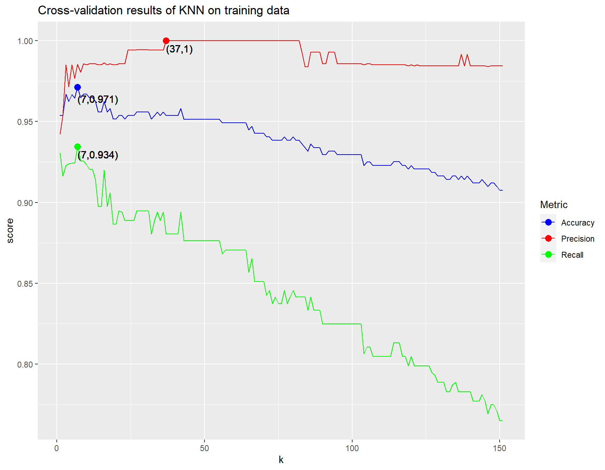
# keep ideal k for further testing
k = knn_eval_cv$k[which.max(knn_eval_cv$recall)]3.2 Random Forest
# set up model on training data
RF_model <- randomForest(
formula = malignant ~ .,
data = train_data
)
RF_model
Call:
randomForest(formula = malignant ~ ., data = train_data)
Type of random forest: classification
Number of trees: 500
No. of variables tried at each split: 5
OOB estimate of error rate: 3.74%
Confusion matrix:
FALSE TRUE class.error
FALSE 283 7 0.02413793
TRUE 10 154 0.06097561Looks pretty good! Train data set model accuracy is roughly 96,26%. Go ahead to prediction and confusion matrix
pred_RF_train <- predict(RF_model, train_data)
confusionMatrix(pred_RF_train, train_data$malignant)Confusion Matrix and Statistics
Reference
Prediction FALSE TRUE
FALSE 290 0
TRUE 0 164
Accuracy : 1
95% CI : (0.9919, 1)
No Information Rate : 0.6388
P-Value [Acc > NIR] : < 2.2e-16
Kappa : 1
Mcnemar's Test P-Value : NA
Sensitivity : 1.0000
Specificity : 1.0000
Pos Pred Value : 1.0000
Neg Pred Value : 1.0000
Prevalence : 0.6388
Detection Rate : 0.6388
Detection Prevalence : 0.6388
Balanced Accuracy : 1.0000
'Positive' Class : FALSE
Mini analysis:
# visualize the tree size
hist(treesize(RF_model),
main = "Nodes used for tree construction",
col = "palegreen")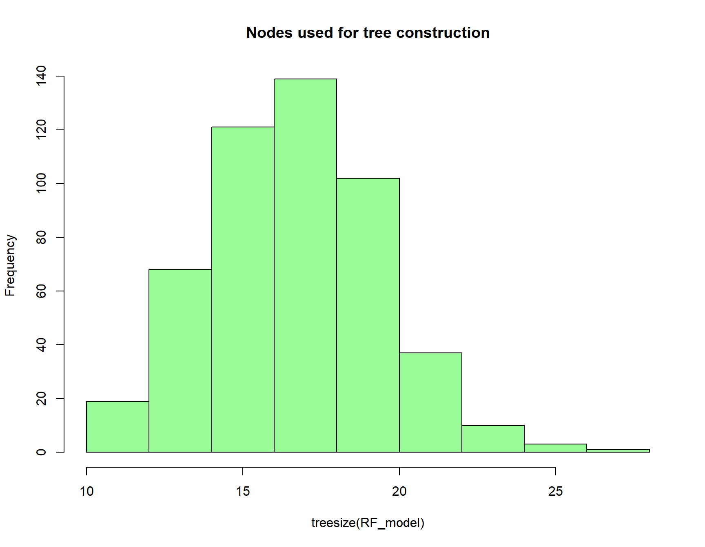
# again, look at importance of predictors
varImpPlot(RF_model,
sort = T,
n.var = 30,
main = "Importance of predictors")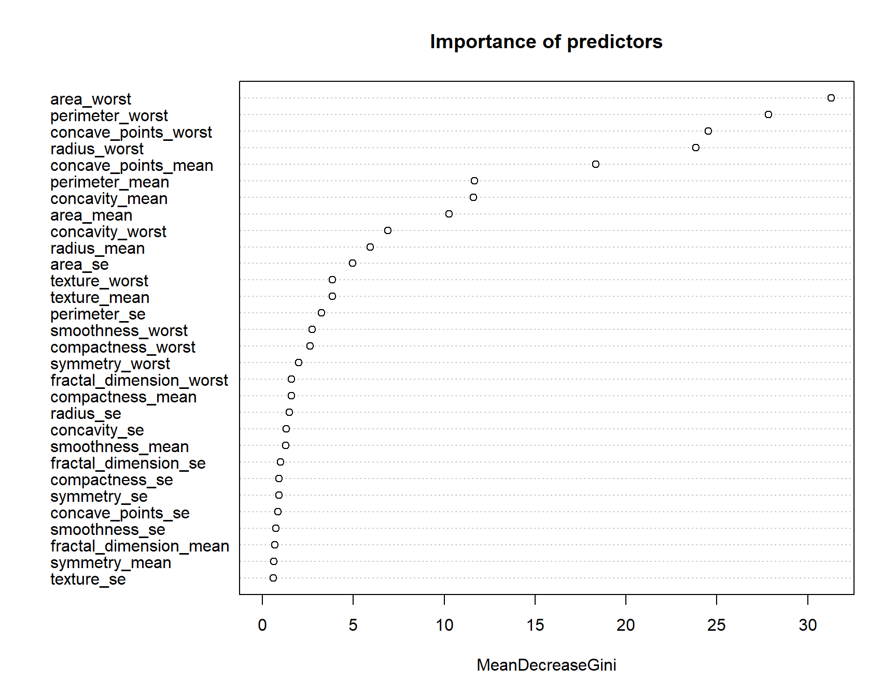
importance(RF_model) MeanDecreaseGini
radius_mean 5.9350604
texture_mean 3.8395799
perimeter_mean 11.6719844
area_mean 10.2635133
smoothness_mean 1.2807463
compactness_mean 1.5862795
concavity_mean 11.5972795
concave_points_mean 18.3514723
symmetry_mean 0.6386797
fractal_dimension_mean 0.6742675
radius_se 1.4695719
texture_se 0.6002923
perimeter_se 3.2397859
area_se 4.9755114
smoothness_se 0.7373272
compactness_se 0.9041205
concavity_se 1.3195997
concave_points_se 0.8673848
symmetry_se 0.9008705
fractal_dimension_se 0.9914255
radius_worst 23.8434890
texture_worst 3.8460249
perimeter_worst 27.8468347
area_worst 31.2910391
smoothness_worst 2.7408327
compactness_worst 2.6310642
concavity_worst 6.8890774
concave_points_worst 24.5330812
symmetry_worst 2.0103635
fractal_dimension_worst 1.5894761Wow, this looks so different!!
# prediction for test data
# pred_RF_test <- predict(RF_model, test_data)
# confusionMatrix(pred_RF_test, test_data$malignant)Setup of cross-validation
nfolds = 10
accuracy_fold <- numeric(nfolds)
precision_fold <- numeric(nfolds)
recall_fold <- numeric(nfolds)
f1_fold <- numeric(nfolds)
# Prepare train/test splits for Cross Validation
set.seed(-12)
permutation = sample(1:nrow(train_data))
# perform Cross Validation
for (j in 1:nfolds){
test_indices <- permutation[((j - 1) * nrow(train_data) / nfolds + 1) : (j * nrow(train_data) / nfolds)]
train_indices <- setdiff(1:nrow(train_data), test_indices)
# obtain training and testing folds
train_fold <- train_data[train_indices, ]
test_fold <- train_data[test_indices, ]
# fit Random Forest model on training fold
RF_model <- randomForest(
formula = malignant ~ .,
data = train_fold
)
# predict on pseudo-test folds
pred <- predict(RF_model, test_fold)
# obtain evaluation metrics for the fold
cm <- confusionMatrix(data = pred, reference = test_fold$malignant)
accuracy_fold[j] <- cm$overall["Accuracy"]
precision_fold[j] <- cm$byClass["Precision"][1] # precision for class 'M'
recall_fold[j] <- cm$byClass["Recall"][1] # recall for class 'M'
f1_fold[j] <- cm$byClass["F1"][1] # F1 Score for class 'M'
}
# compute mean of evaluation metrics across folds
mean_accuracy <- mean(accuracy_fold)
mean_precision <- mean(precision_fold)
mean_recall <- mean(recall_fold)
mean_f1 <- mean(f1_fold)
cat("Mean Accuracy:", mean_accuracy, "\n")Mean Accuracy: 0.9644444 cat("Mean Precision:", mean_precision, "\n")Mean Precision: 0.9668242 cat("Mean Recall:", mean_recall, "\n")Mean Recall: 0.9739043 cat("Mean F1 Score:", mean_f1, "\n")Mean F1 Score: 0.9698234 4. Fine-Tuning
Text
tuned_RF_model <- tuneRF(train_data[,-5], train_data[,5],
stepFactor = 0.5,
plot = TRUE,
ntreeTry = 110, # <- I've played around with it & 110 seems to be highest
trace = TRUE,
improve = 0.05)Warning in rfout$mse/(var(y) * (n - 1)/n): Recycling array of length 1 in vector-array arithmetic is deprecated.
Use c() or as.vector() instead.mtry = 10 OOB error = 0.01465291
Searching left ...Warning in rfout$mse/(var(y) * (n - 1)/n): Recycling array of length 1 in vector-array arithmetic is deprecated.
Use c() or as.vector() instead.mtry = 20 OOB error = 0.01435474
0.02034859 0.05
Searching right ...Warning in rfout$mse/(var(y) * (n - 1)/n): Recycling array of length 1 in vector-array arithmetic is deprecated.
Use c() or as.vector() instead.mtry = 5 OOB error = 0.03282322
-1.240049 0.05 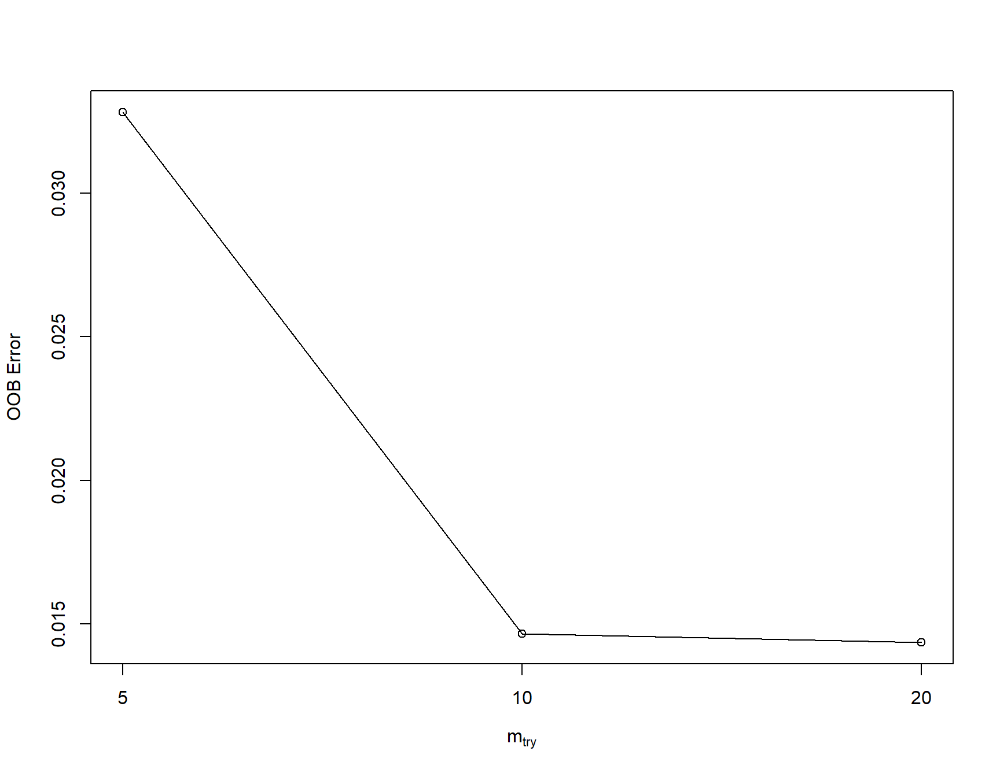
5. Final Model Selection
Text
5.1 KNN
# evaluate on testing data
knn_eval_test = evaluate_KNN(train_x = train_data_x, train_y = train_data_y,
test_x = test_data_x, test_y = test_data_y,
k_range = k)
knn_eval_test k mse accuracy precision recall
1 7 0.02631579 0.9736842 1 0.9375# pca for lower dimensionality
get_PVE = function(pca_out) {
pca_out$sdev ^ 2 / sum(pca_out$sdev ^ 2)
}
train_data_x_pca = prcomp(train_data_x, scale = TRUE)
pve = get_PVE(train_data_x_pca)
knn_pca_percent = 0.9
knn_pca_cutoff = which(cumsum(pve) > knn_pca_percent)[1]
biplot(train_data_x_pca, scale = 0)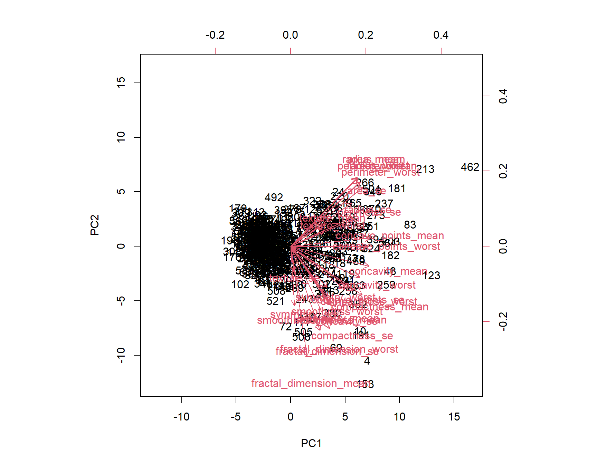
Hard to read but it’s again evident that a lot of variables correlate highly and thus pca might be very efficient at reducing size.
ggplot(mapping = aes(x = 1:length(pve), y = cumsum(pve))) +
geom_line() +
geom_abline(slope = 0, intercept = knn_pca_percent, linetype = "dashed") +
geom_point(mapping = aes(x = knn_pca_cutoff, y = cumsum(pve)[knn_pca_cutoff])) +
geom_text(mapping = aes(x = knn_pca_cutoff, y = cumsum(pve)[knn_pca_cutoff],
label = paste("(", knn_pca_cutoff, ", ", round(cumsum(pve)[knn_pca_cutoff], 3), ")", sep = "")),
vjust = 1.5, hjust = 0)
# apply evaluations to pca
# continue here
# train_data_x_pca$x[, 1:knn_pca_cutoff]
test_data_x_pca = scale(test_data_x) %*% train_data_x_pca$rotation[, 1:knn_pca_cutoff]
knn_eval_pca = evaluate_KNN(train_x = train_data_x_pca$x[, 1:knn_pca_cutoff], train_y = train_data_y,
test_x = test_data_x_pca, test_y = test_data_y,
k_range = k)
knn_eval_pca k mse accuracy precision recall
1 7 0.04385965 0.9561404 1 0.8958333# visualize normal test and pca test to see if dataset reduction costs performance
knn_eval = knn_eval_cv %>%
mutate(category = "Cross-Validation") %>%
filter(k == .GlobalEnv$k) %>%
bind_rows(knn_eval_pca %>% mutate(category = "test set (PCA)")) %>%
bind_rows(knn_eval_test %>% mutate(category = "test set (regular)")) %>%
select(-k)precision is 1 for pca?
# visualize
knn_eval %>%
pivot_longer(cols = -category) %>%
ggplot(mapping = aes(x = category, y = value, fill = category)) +
geom_bar(stat = "identity") +
ylim(0, NA) +
facet_grid(. ~ name) +
theme(axis.title.x=element_blank(),
axis.text.x=element_blank(),
axis.ticks.x=element_blank())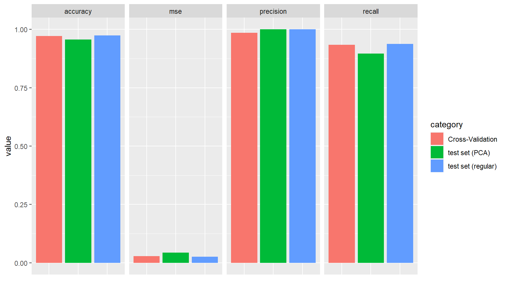
#calculate predicted values for knn
knn_predictions = knn(train = train_data_x,
test = test_data_x,
cl = train_data_y,
k = k,
prob = TRUE)
knn_probabilities = attr(knn_predictions, "prob")
knn_compare = data.frame(y_true = test_data_y, y_pred = knn_probabilities) %>%
arrange(desc(y_pred)) # start with predictions of 1 and end with those of 0# roc curve for best k
roc_data <- knn_compare %>%
mutate(true_positive = cumsum(y_true == 1) / sum(y_true == 1),
false_positive = cumsum(y_true == 0) / sum(y_true == 0))
ggplot(roc_data, aes(x = false_positive, y = true_positive)) +
geom_line() +
geom_abline(slope = 1, intercept = 0, linetype = "dashed") + # Diagonal line
labs(x = "False Positive Rate", y = "True Positive Rate", title = "ROC Curve of knn with k = 6")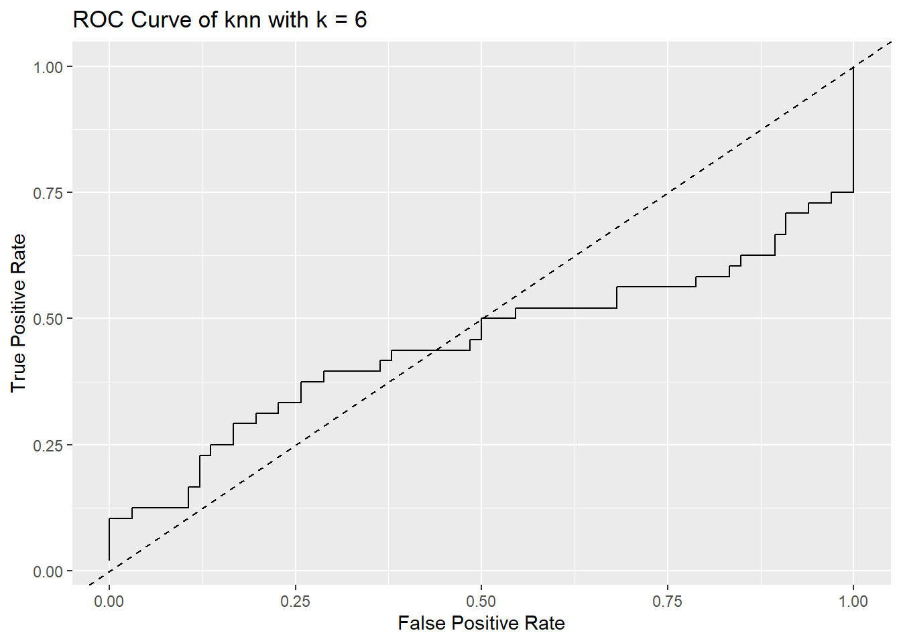
Please let this not be the real curve.